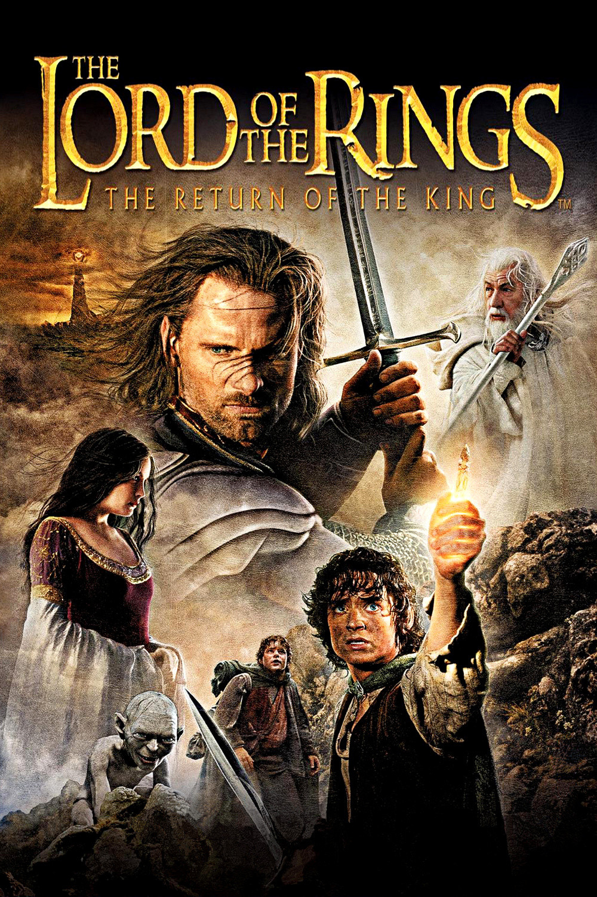

The Return of the King

- Frodo, Sam and Gollum are set free by Boromir's little brother whose dad is the regent of the kingdom
- But it turns out his dad is a bad ruler, and is ignoring the threat of Mordor
- Aragorn, Gimli, Legolas and Gandalf reunite with Merry and Pippin and celebrate
- But they know they need to prepare, so Gandalf and Pippin go to warn Boromir's dad
- They end up signaling the rest of the characters in Rohan that Gondor needs help
- Aragorn is actually the rightful king, and to bring backup he goes to enlist the help of a ghost army
- Frodo, Sam and Gollum sneak into Mordor and see an army heading to the kingdom of Gondor which is where everyone else is
- If you thought the siege in the last movie was cool, this one is even bigger and better, everyone thinks it's their last stand
- Aragorn saves everyone at the last minute with his ghost army
- Frodo and Sam are led into a trap by Gollum and almost get eaten by a spider but end up capture by the forces of Mordor
- They escape and have to go undercover to destroy the ring
- At the last second, Frodo is corrupted by the ring, but Gollum attacks him and ends up destroying the ring in Mount Doom (what a name!)
- Long story short, it was a journey but they destroy Sauron for good now
- Great end to the trilogy, many big emotional payoffs, the soundtrack is still amazing